Typing Karshon in LibreOffice Writer on Windows
Related Articles
Introduction
This guide will walk you through the process of setting up and using Karshon (Suriyani Malayalam) typing in LibreOffice Writer on Windows. While Microsoft Word is a popular word processor, it currently lacks full support for typing Karshon, making LibreOffice Writer the recommended choice for this purpose. Follow these steps carefully to ensure proper functionality.
Prerequisites
Before you begin, make sure you have the following:
- Windows 11 operating system
- Administrator access to install software and fonts
- Internet connection to download required files
Installation Steps
-
Install LibreOffice
Download and install the latest version of LibreOffice from the official website: https://www.libreoffice.org/download/download-libreoffice/
-
Install Karshon Keyboard
Download Hendo Academy's Syriac Phonetic - Karshon Keyboard from here. Extract the downloaded karshon-keyboard.zip file and double click the setup.exe file to install the keyboard.
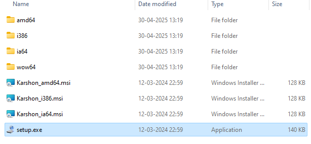
Installing the Karshon keyboard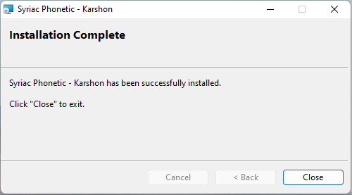
Installation successful -
Install Syriac Language Pack
Open Windows Settings, go to Time & Language, click on Language, click on "Add a Language", search for Syriac, and click Next to install.
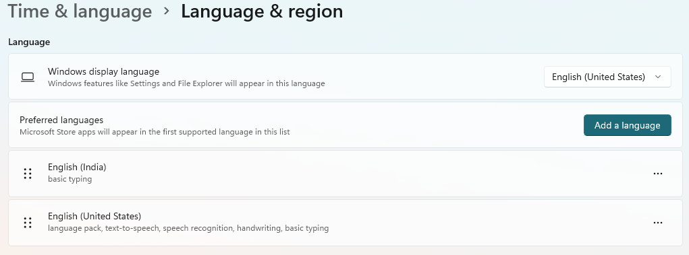
Click on "Add a Language"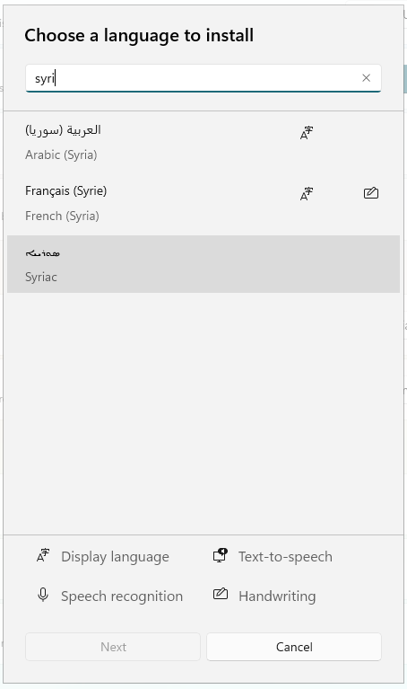
Search for Syriac, click Next to install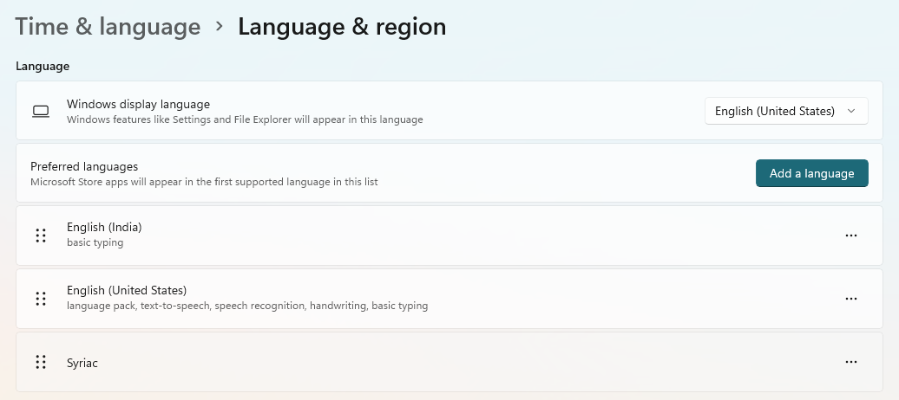
Syriac language installed -
Configure Keyboard
Once the Syriac language pack is installed, click on the three dots next to the Syriac section and select "Language Options". In the options screen, click "Add a keyboard" and select "Syriac Phonetic - Karshon".
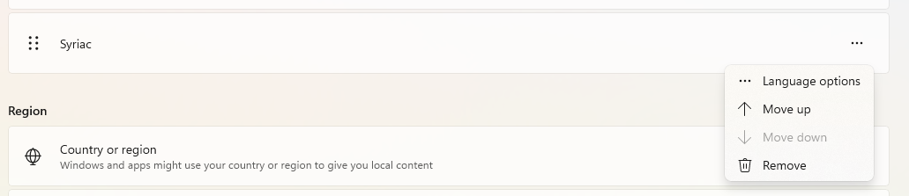
Adding Karshon keyboard in language options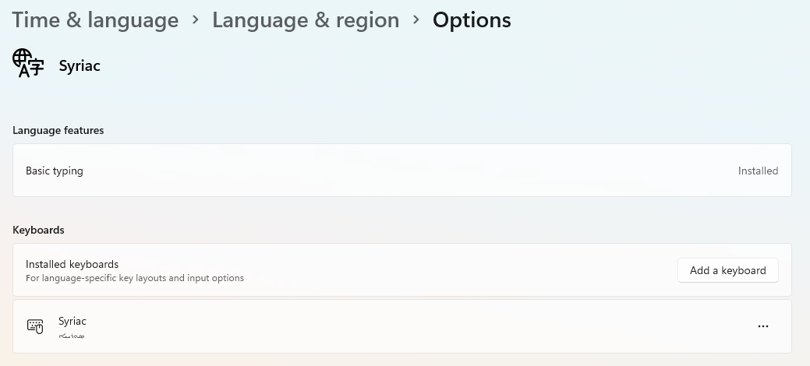
Click on "Add a keyboard"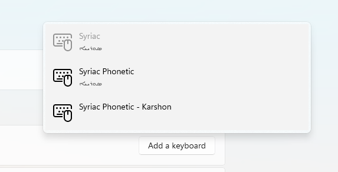
Select "Syriac Phonetic - Karshon" -
Install Karshon Font
Download the Karshon font from here. Double-click the .ttf file to install it.
Important Notice:The current version of the Karshon (Malayalam Garshuni) font available at Beth Mardutho's website is a preliminary release and may contain some limitations or display issues. We recommend waiting for the upcoming official release by Dr. George Kiraz of Beth Mardutho Institute, which will include comprehensive improvements and bug fixes. You may also use Hendo Academy's own Karshon font which will be released in the future
Using Karshon in LibreOffice Writer
-
Set Input Language
Set Syriac and Syriac Phonetic - Karshon keyboard as the input language in Windows. Click the language icon in the taskbar and select the Syriac Phonetic - Karshon keyboard, or press Windows + Spacebar to switch between languages.
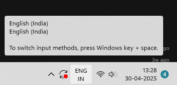
Selecting Karshon keyboard from language options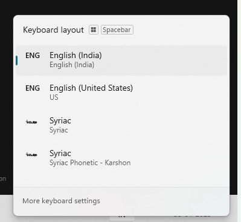
Select Syriac Phonetic - Karshon keyboard -
Configure LibreOffice Writer
Open LibreOffice Writer and select the Karshon font (or the East Syriac Adiabene font you installed earlier) from the font dropdown menu. If it is not available in the dropdown menu, please close the LibreOffice Writer and open it again.
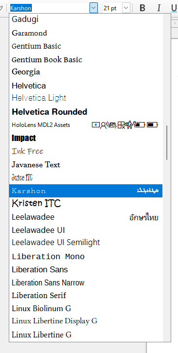
Selecting Karshon font in LibreOffice Writer -
Enable Complex Text Layout
Go to Tools > Language > For All Text > More and check the "Complex Text Layout" checkbox. Select any version of Arabic in the dropdown menu (since Syriac is not available in the list, Arabic is the closest match).
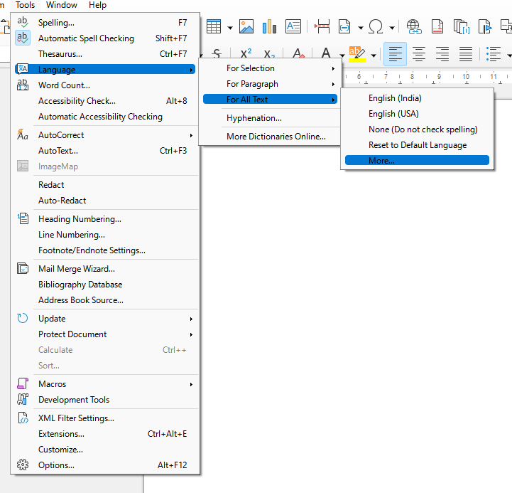
Set Language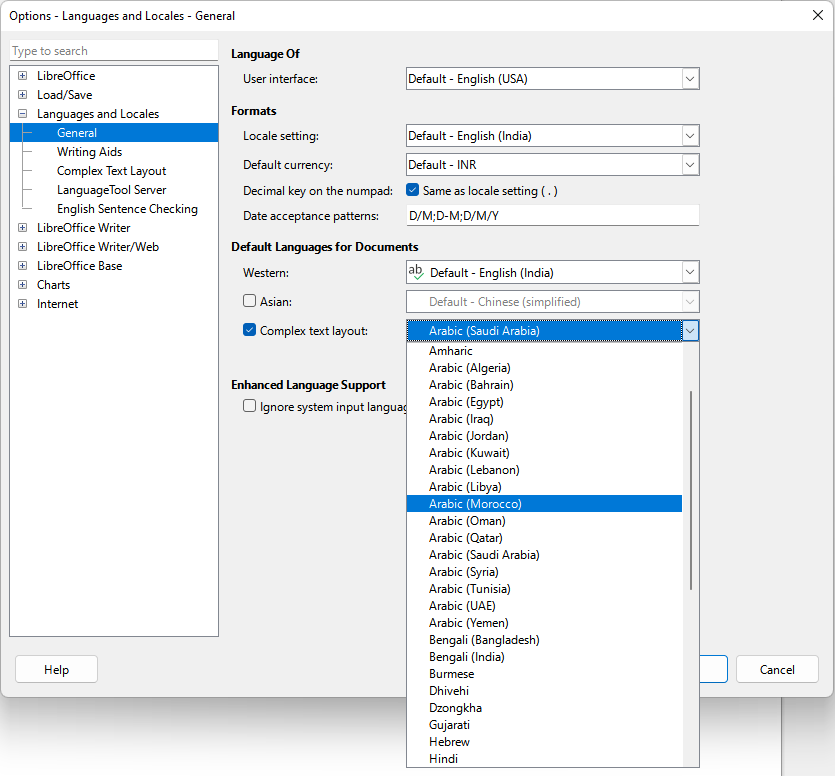
Select any version of Arabic from the dropdown menu -
Set Text Direction
Look for the text direction buttons on the right side of the top bar and select the right-to-left text direction option.
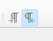
Setting right-to-left text direction -
That's it!
You should now be able to type in Karshon. If you encounter any issues, please refer to the troubleshooting section below.
 കർശോൻ ടൈപ്പ് ചെയ്യാൻ ഇനി പറ്റും!
കർശോൻ ടൈപ്പ് ചെയ്യാൻ ഇനി പറ്റും!
Note: When you start typing in Karshon, the document language should automatically change to Syriac-Turkiye (Syr-TR). You can verify this at the bottom of the page. You can change the document language by clicking on it.
Troubleshooting
- If you see Estangela letters instead of Karshon, make sure you've selected the Karshon font(or East Syriac Adiabene font your installed earlier) from the dropdown menu. You might need to do this a few times in the beginning.
- If the text direction is incorrect, ensure you've selected the right-to-left text direction option.
- If the keyboard isn't working, verify that you've installed both the Syriac language pack and the Karshon keyboard correctly.
- If you face any issues, please make a comment below